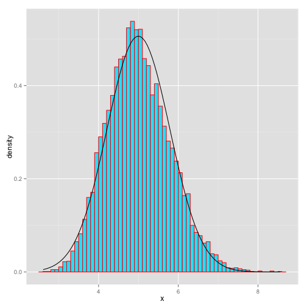

Rafael Reséndiz, Proffesor of Educative Assesment
UABC, Xochicalco
Load files and datasets and and have fun with them
data(iris) # Load data
lm(iris) # Make a lineal regression
##
## Call:
## lm(formula = iris)
##
## Coefficients:
## (Intercept) Sepal.Width Petal.Length
## 2.1713 0.4959 0.8292
## Petal.Width Speciesversicolor Speciesvirginica
## -0.3152 -0.7236 -1.0235
Setting the global options Example: The exponential distribution
lambda = 0.2 # lambda for all simulations
n = 40 # number of exponential random variables
nsims = 1:10000 # number of simulated averages
set.seed(901)
means <- data.frame(x=sapply(nsims,function(x) {mean(rexp(n,lambda))})) # necessary means
head(means,2) # show the results
## x
## 1 3.981570
## 2 4.148078
str(means) # See a summary of the results
## 'data.frame': 10000 obs. of 1 variable:
## $ x: num 3.98 4.15 5.38 7.41 5.73 ...
fit <- lm(iris) # Work with real data
confint(fit) # Identify intercepts and others
## 2.5 % 97.5 %
## (Intercept) 1.6182321 2.72430044
## Sepal.Width 0.3257653 0.66601260
## Petal.Length 0.6937939 0.96469395
## Petal.Width -0.6140049 -0.01630542
## Speciesversicolor -1.1982739 -0.24885002
## Speciesvirginica -1.6831329 -0.36386273
summary(fit$residuals)
## Min. 1st Qu. Median Mean 3rd Qu. Max.
## -0.794200 -0.218700 0.008987 0.000000 0.202500 0.731000
Plot your results and identify your creativity 